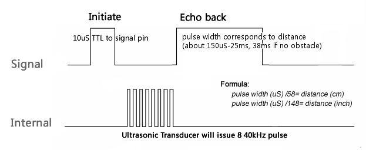

Seeed ultrasonic sensor is non-contact distance measurement module, which is also compatible with electronic brick. It’s designed for easy modular project usage with industrial performance.
Model: SEN136B5B
http://www.seeedstudio.com/depot/images/large/product/ultra_LRG.jpg
| Supply voltage | 5V |
| Global Current Consumption | 15 mA |
| Ultrasonic Frequency | 40k Hz |
| Maximal Range | 400 cm |
| Minimal Range | 3 cm |
| Resolution | 1 cm |
| Trigger Pulse Width | 10 μs |
| Outline Dimension | 43x20x15 mm |

A short ultrasonic pulse is transmitted at the time 0, reflected by an object. The senor receives this signal and converts it to an electric signal. The next pulse can be transmitted when the echo is faded away. This time period is called cycle period. The recommend cycle period should be no less than 50ms. If a 10μs width trigger pulse is sent to the signal pin, the Ultrasonic module will output eight 40kHz ultrasonic signal and detect the echo back. The measured distance is proportional to the echo pulse width and can be calculated by the formula above. If no obstacle is detected, the output pin will give a 38ms high level signal.
Includes important code snippet. Demo code like :
/***************************************************************************/ // Function: Measure the distance to obstacles in front and print the distance // value to the serial terminal.The measured distance is from // the range 0 to 400cm(157 inches). // Hardware: Ultrasonic Range sensor // Arduino IDE: Arduino-1.0 // Author: LG // Date: Jan 17,2013 // Version: v1.0 modified by FrankieChu // by www.seeedstudio.com // // This library is free software; you can redistribute it and/or // modify it under the terms of the GNU Lesser General Public // License as published by the Free Software Foundation; either // version 2.1 of the License, or (at your option) any later version. // // This library is distributed in the hope that it will be useful, // but WITHOUT ANY WARRANTY; without even the implied warranty of // MERCHANTABILITY or FITNESS FOR A PARTICULAR PURPOSE. See the GNU // Lesser General Public License for more details. // // You should have received a copy of the GNU Lesser General Public // License along with this library; if not, write to the Free Software // Foundation, Inc., 51 Franklin St, Fifth Floor, Boston, MA 02110-1301 USA // /*****************************************************************************/ #include "Arduino.h" class Ultrasonic { public: Ultrasonic(int pin); void DistanceMeasure(void); long microsecondsToCentimeters(void); long microsecondsToInches(void); private: int _pin;//pin number of Arduino that is connected with SIG pin of Ultrasonic Ranger. long duration;// the Pulse time received; }; Ultrasonic::Ultrasonic(int pin) { _pin = pin; } /*Begin the detection and get the pulse back signal*/ void Ultrasonic::DistanceMeasure(void) { pinMode(_pin, OUTPUT); digitalWrite(_pin, LOW); delayMicroseconds(2); digitalWrite(_pin, HIGH); delayMicroseconds(5); digitalWrite(_pin,LOW); pinMode(_pin,INPUT); duration = pulseIn(_pin,HIGH); } /*The measured distance from the range 0 to 400 Centimeters*/ long Ultrasonic::microsecondsToCentimeters(void) { return duration/29/2; } /*The measured distance from the range 0 to 157 Inches*/ long Ultrasonic::microsecondsToInches(void) { return duration/74/2; } Ultrasonic ultrasonic(7); void setup() { Serial.begin(9600); } void loop() { long RangeInInches; long RangeInCentimeters; ultrasonic.DistanceMeasure();// get the current signal time; RangeInInches = ultrasonic.microsecondsToInches();//convert the time to inches; RangeInCentimeters = ultrasonic.microsecondsToCentimeters();//convert the time to centimeters Serial.println("The distance to obstacles in front is: "); Serial.print(RangeInInches);//0~157 inches Serial.println(" inch"); Serial.print(RangeInCentimeters);//0~400cm Serial.println(" cm"); delay(100); }
| Revision | Descriptions | Release |
|---|---|---|
| v1.0 | Seeed Ultrasonic Sensor | May 14, 2010 |
The resources need to be downloaded, like Eagle file, Demo code, project or other datasheet.
If you have questions or other better design ideas, you can go to our forum or wish to discuss.
Copyright (c) 2008-2016 Seeed Development Limited (www.seeedstudio.com / www.seeed.cc){kind=link}